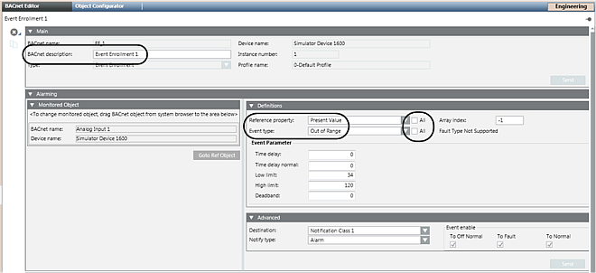

BACnet Object Creation
The BACnet Object Editor supports many standard BACnet object types and their associated properties. In the BACnet Object Editor, you can create event enrollment and notification class objects. For other BACnet objects, you can use Scheduler for creating schedules, command, and calendar objects, and the Trends application to create trend logs and trend log multiple objects. All other objects are created outside Desigo CC and imported by one of two methods:
- The object is created in the network device and automatically imported with the BACnet Auto-Discovery feature.
- The object is created with the APOGEE Commissioning Tools and imported using the SiB-X Import application.
Default Properties
BACnet objects imported into the Desigo CC system have properties not coming from the system set to common default values and settings, and in many cases no further action is needed other than to specify specific values such as a setpoint, high and low alarm limits, and so on. Likewise, new event enrollment and notification class objects are created with common defaults.
In the following example, the fields in the Definitions section are defaulted to common settings for a new event enrollment object:

By default, the Reference Property and Event Type fields are filtered and provide only the most common options for an event enrollment object. However, by clicking the All check box, an advanced user can select from an unfiltered list of properties.